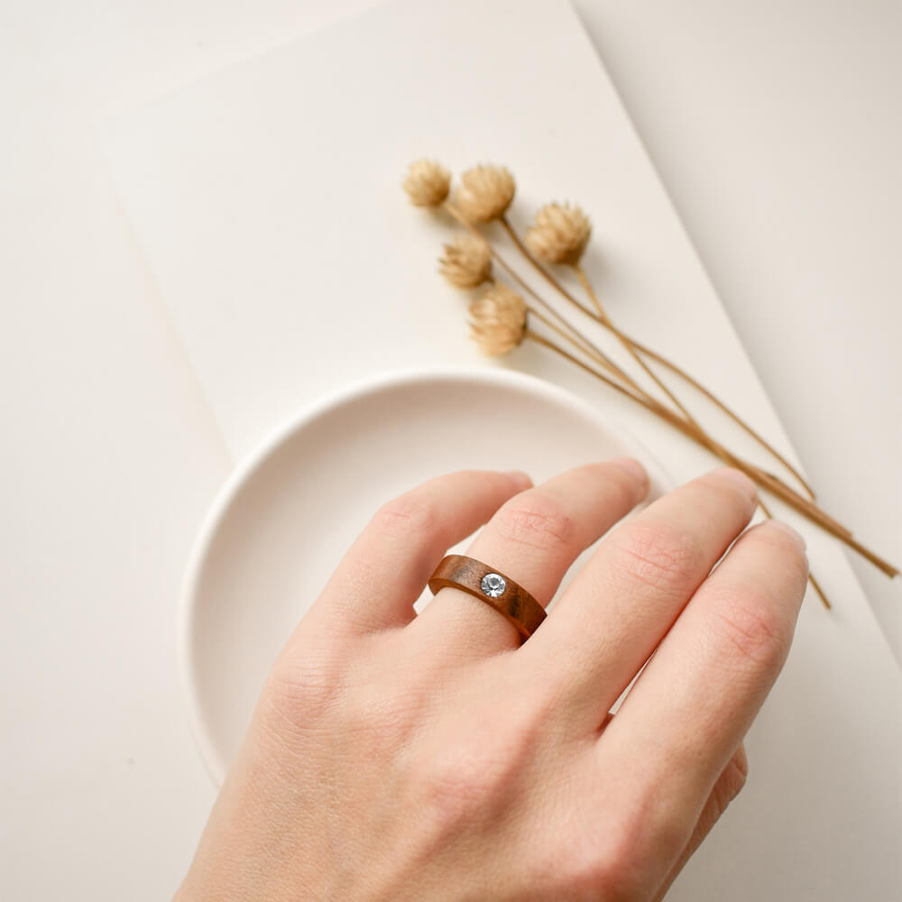
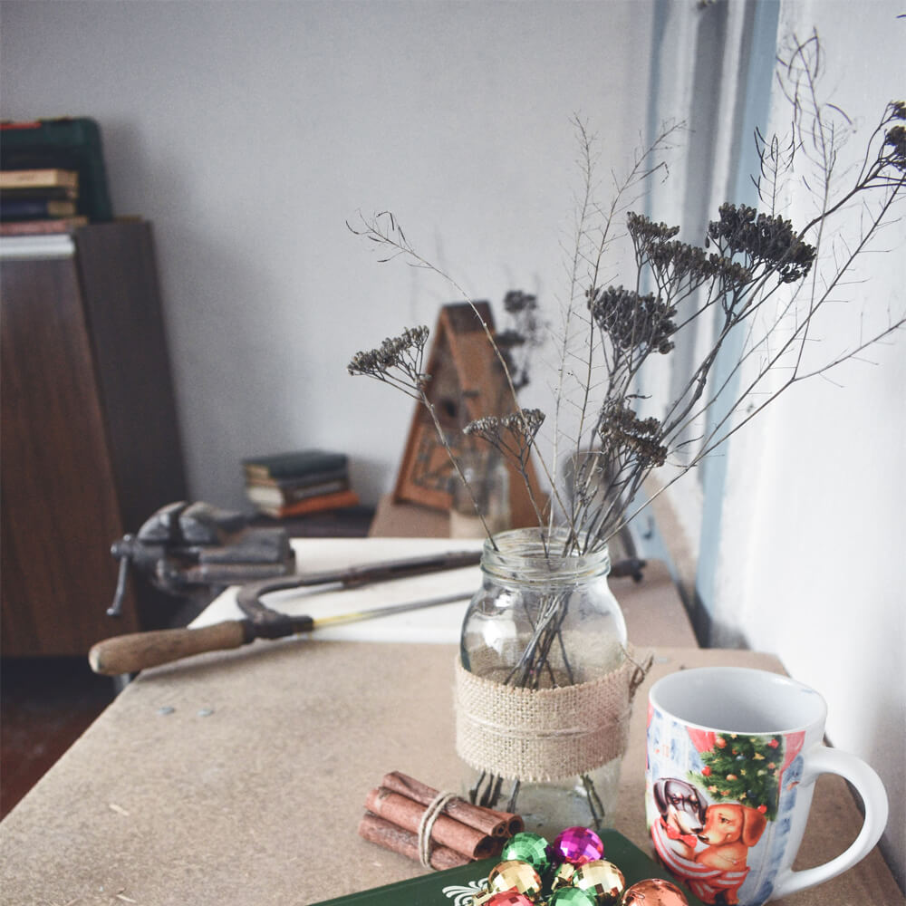

私たちの考えるジュエリーとは
Concept
私たちの考えるジュエリーとは、ただの飾りではありません。身につける人の思い出や
気持ちを大切にする小さな宝物です。形や色に、その人らしさや願いがこめられています。
また、大切な人へのプレゼントとして、心を伝えることもできます。だから、ジュエリーは毎日
の生活を明るくする特別な存在だと思います。
ハンドメイドにこだわる理由
Work
ハンドメイドにこだわる理由は、世界に一つしかない特別な物だからです。作る人の気持ちや
性格が作品にあらわれます。プレゼントにすると、とても喜ばれます。また、古い物を使って
新しく作れるので、環境にもやさしいです。自分らしさを出し、人を幸せにできるので、
ハンドメイドは大切だと思います。
